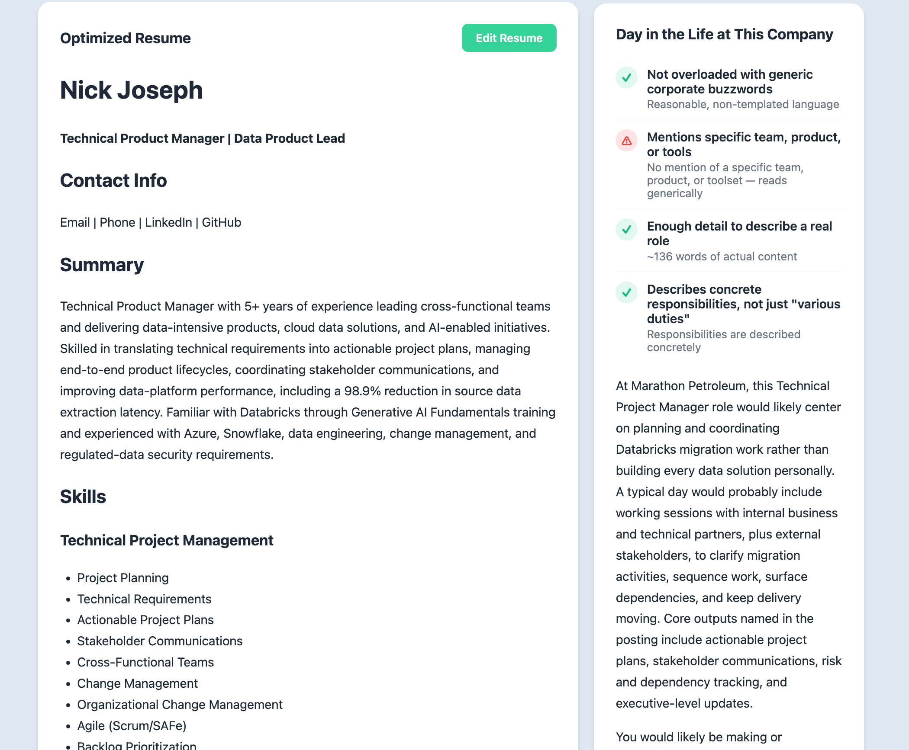
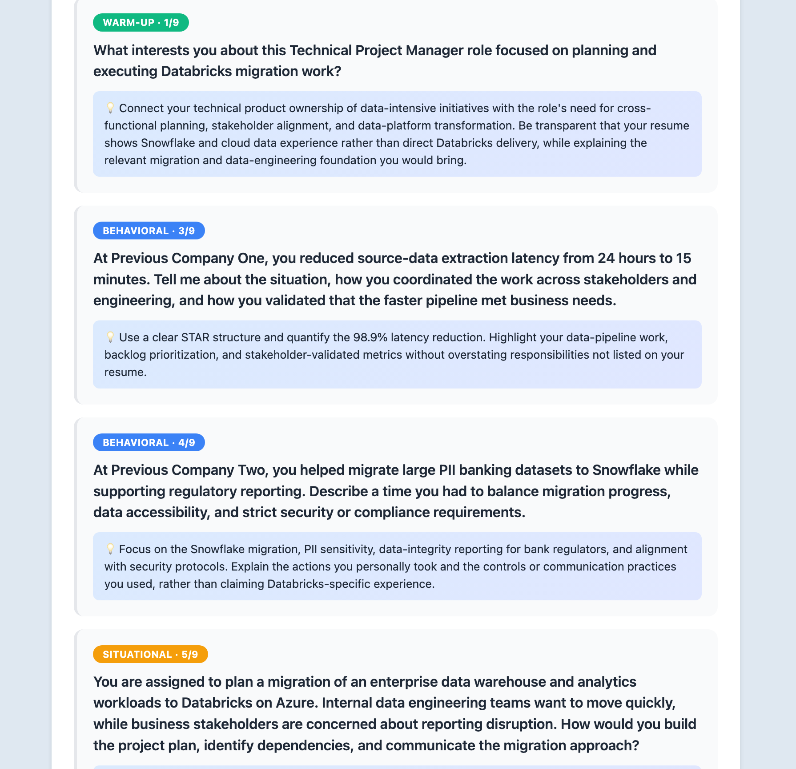

Most job tools just churn out generic resume buzzwords. ResumeWhip acts as an intelligent career advocate: verifying listings to protect job seekers from scam posts and recruiter phishing, mapping non-linear experience to new industries, and transforming bullet points into high-impact, ATS-optimized metric stories—without hallucinating numbers.

Six tools covering the full job-search workflow - from deciding whether a posting is worth applying to, through optimizing materials, to actual interview prep.
Defend and Verify (Free Tier)Analyzes job descriptions for data-harvesting red flags, ghost postings, and high-risk boilerplate indicators before candidates waste hours applying.
Evaluates unsolicited recruiter messages and LinkedIn outreach against known phishing patterns and spoofing attacks.
Generates high-converting, context-aware cover letters matching candidate experience directly to posting requirements.
Re-engineers resume bullets around quantifiable impact and ATS heuristics—using strict prompt constraints to prevent invented metrics.
Performs cross-domain skill mapping, identifies domain gaps, and crafts pivot strategies for non-linear career changes.
Generates an 8-question mock interview with adaptive difficulty levels, tailored directly to the target posting and the candidate’s specific resume gaps.
The tool takes a resume file alongside the full text of a target job posting — no manual tagging or formatting required.
Each bullet is run through a structured prompt against OpenAI's GPT-5.6 model, explicitly instructed to never invent or exaggerate metrics — if the original resume has no number for a bullet, the rewrite uses strong qualitative language instead of fabricating one, while tightening language and mirroring keywords from the posting.
Results return in seconds — optimized resume bullets, positioning guidance, and application materials the candidate can review, adjust, and use immediately.

To ensure ResumeWhip delivers measurable value, I developed an internal evaluation pipeline that scores outputs against ATS-oriented resume heuristics, keyword alignment, impact language, and readability
As a solo build, I managed the entire product lifecycle from conceptualization to deployment — including a full rebuild of the frontend partway through, once the product outgrew what a demo-focused UI framework could support.
A walkthrough of the tool taking a real resume and a real job description, and producing both a cover letter and an optimized resume.
Three tools (Cover Letter Writer, Job Validator, Recruiter Message Checker) are free and unlimited, no account required. The other three (Resume Optimizer, Career Transition Coach, Interview Prep) include 3 free uses before a paid subscription. Email collection is used only to manage usage limits and prevent abuse.
Current Status: ResumeWhip is live and actively improving based on user feedback, running on a custom FastAPI backend and frontend I built to replace the original Gradio-based version as the product grew.
Open ResumeWhip →